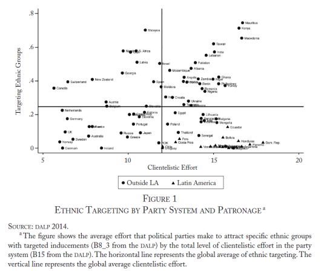
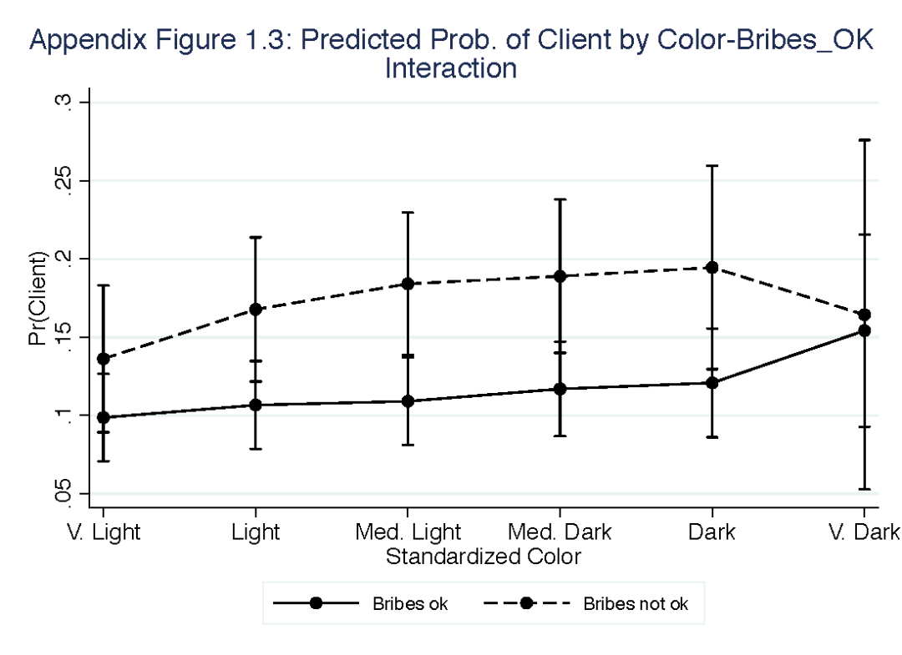
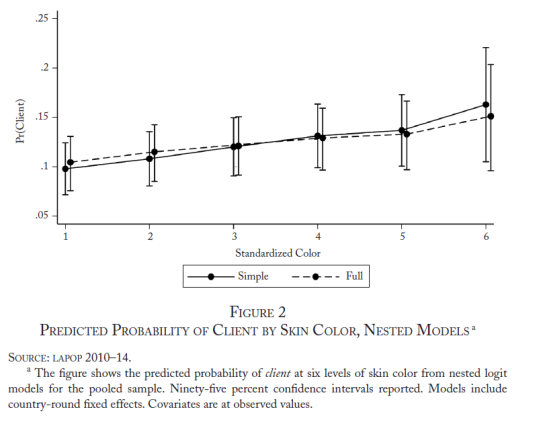
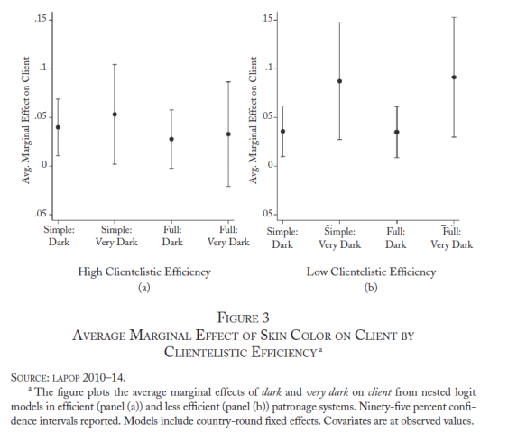
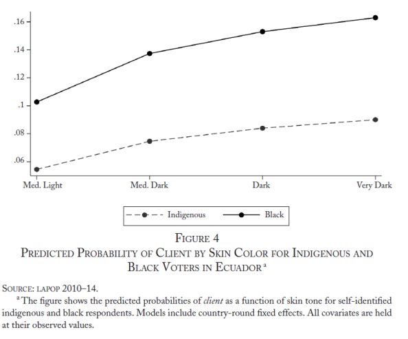
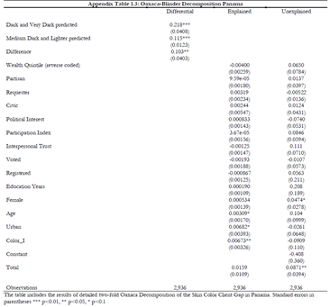
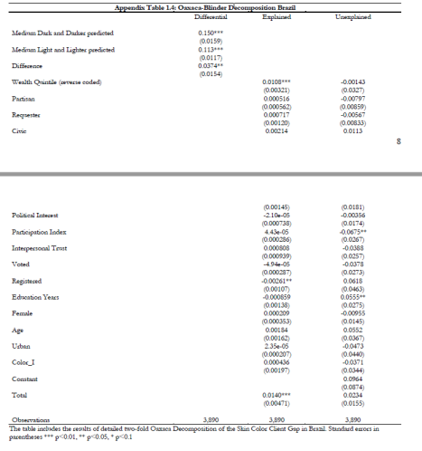
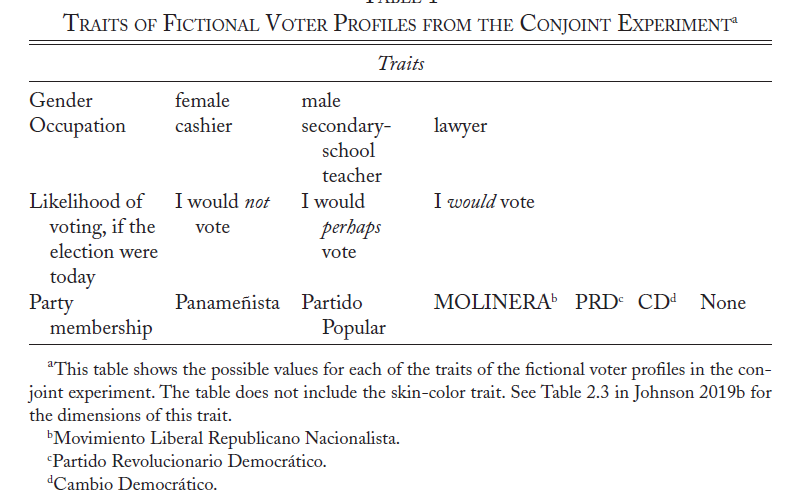
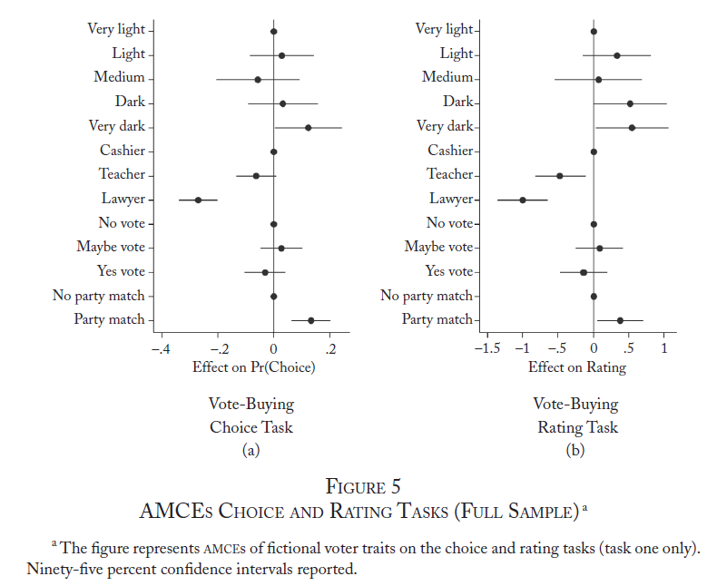
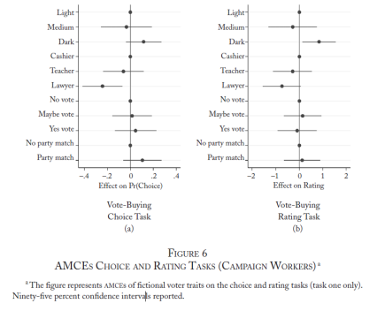

收录于合集

作品简介
【作者】
Marcus Johnson，巴鲁克大学纽约市立大学政治学助理教授。他的研究方向为美洲的种族和选举政治。美洲黑人身份的知名度和社会地位日益突出，他目前的工作旨在解释拉丁美洲选民明显缺乏种族吸引力的情况。
【编译】 郭新靓（国政学人编译员，南开大学周恩来政府管理学院）
【校对】 阮含含、缪高意
【审核】 丁伟航
【排版】 秦子宁
【美编】 聂涵琳
【来源】 Johnson, Marcus.“Electoral Discrimination: The Relationship between Skin Color and VoteBuying in Latin America.” World Politics 72.1 (2020): 80-120.
期刊简介
《世界政治》（World Politics），创刊于1948年，是国际知名的政治科学季刊，关注国际关系和比较政治领域中的理论和经验问题。根据Journal Citation Reports的数据，2019年该期刊的影响因子为2.5。
选举歧视：
拉美选举中肤色与贿选的关系
Electoral Discrimination: The Relationship between Skin Color and Vote Buying in Latin America
Marcus Johnson
内容提要
在什么情况下，种族歧视会影响选举结果？本文 将选举歧视当作拉美土著和黑人后裔在选举中被边缘化的选举机制 。当选民在不同的选举条件下被动员时，选举歧视就会发生。根据2010-2014年间拉美晴雨表的数据和联合实验的结果，作者认为在拉美这个存在大量黑人和土著人的地区，肤色是导致贿选的重要因素。肤色影响贿选的一个重要原因在于种族中立的目标对深色皮肤选民不成比例的影响。财富、政治、公民参与、党派、政治利益、人际信任和地理等方面的差异在一定程度上能够解释肤色对选举结果的影响，尽管这些因素的影响在不同国家之间存在差异。在这些种族中立因素之外，作者还阐述了影响“肤色—贿选”的其他因素。本文的结论能够充分地说明在拉丁美洲及其他种族分层国家进行选举动员的后果。
文章导读
01
开篇引言
本文考察了拉丁美洲政治边缘化的微观基础，探究 种族分层国家内的选举动员如何成为制度化歧视的可能性场域 。在肤色等级制度下，长期以来的殖民主义、民族构建和移民塑造了拉美公民的分化。拉丁美洲普遍的基于肤色的社会和经济分层为选举歧视提供可能条件。选举歧视的一个特殊表现是贿选。在拥有大量黑人和土著人的国家和地区，肤色是影响贿选的重要因素，这是因为种族中立的标准对其产生了不成比例的影响。
作者用2010、2012和2014年的拉美晴雨表数据对11个拥有大量黑人和土著居民的拉丁美洲民主国家进行了检验，试图分析种族中立原则的不成比例造成的选民眼中肤色差异的程度，以及这种差异在多大程度上可以归因于基于归属的差别对待。作者还借鉴了一个联合实验的结果：候选者的肤色、性别、职业、党派都不相同，参与者在这些候选者中进行虚拟贿选，试图运用该实验结果来证明肤色对贿选的独立影响。
02
拉丁美洲种族分层的社会政治后果
拉丁美洲长期的殖民主义、国家建设和移民形成了一个强大的种族分层体系。在种族分层的社会中，社会经济地位、受教育程度等本应坚持种族中立原则的议题却与种族问题交织在一起，而群体成员资格是人们获得社会地位、物质利益和政治权利分配的基础。
在宏观层面，种族分层将种族重要性绑定到具有政治影响的标准和制度中，边缘的群体受到更多压迫。在微观层面，人们对处于社会和经济边缘的成员身份具有刻板印象，这些刻板印象反过来影响着种族内部和外部的行为。
肤色和贫困有密切的联系。根据LAPOP的调查，29%的浅肤色人处于贫困。然而，却有50%的中肤色人和46%的深肤色人处于贫困。平均而言，对阶级歧视和肤色歧视的认知随着肤色的加深而增加。此外，超过40%的深肤色受访者认为受到过歧视，然而只有不到10%的浅肤色受访者认为受到过歧视。
种族和党派议题相互交叠。既有文献中，黑人、土著与政党之间的关系并未得到充分的探讨。族裔对种族政党来说是决定选举支持率的重要因素，所以应当质疑这种把党派偏见视为种族中立的情况。即使是在有强大本土政党的体系中，也应当保持质疑，因为种族交叉支持这些多民族政党会影响种族中立的标准。
种族分层反映在种族之间权力和影响力的不平等分布。既有研究表明，人口的种族构成与国家行政和立法部门的人员结构之间存在很大差距。在整个拉美，代表性方面的种族差异与财富差距并存。纳塔利亚·布埃诺和塔德·邓宁对巴西各州和联邦选举的官员的种族进行了大量编码，发现大约50%自我认知为黑人的官员和25%的黑人官员之间存在显著的差异。他们最终将这种差距归因于白人和黑人候选人之间的资源差距。黑人和白人在个人资产和竞选捐款方面的差距使黑人求职者处于不利地位。
03
选举歧视和贿选
本文从社会学的角度给出“歧视”的定义： 根据人们可观察的特征并将其分割成不同的社会阶层，从而加以区别对待的行为，就是歧视性行为。当一种行为针对某一种族或背离种族中立原则时，就是种族歧视。
选举歧视就是根据选民可观察到的特点，在不同的选举包容条件下动员选民的情况。在候选人和政党操纵选举进程和结果的情况下，选举歧视更容易发生。因为这些选举战略针对的目标群体不同，会造成不成比例的后果。即使在没有明确种族动机的情况下，也会造成下层群体的系统性劣势。本文中关于选举歧视的论述，反映了在下层和特权群体选举参与率相等的情况下，下层群体政治表达受限的情况。
贿选是选举歧视的一个重要表现，因为它象征着公民身份的色盲模式（color-blind model），是拉丁美洲种族霸权的基石。在严重分层的社会中，政党将其联系结构划分为核心和非核心选区，并将这种划分作为向核心选民（通常是中产阶级混血儿）传达纲领性信息、同时动员非核心选民（通常是下层选民）的手段。
图1是关于民主问责与联系项目（DALP）的数据，该数据显示了全世界政党体系中庇护主义（clientelism）和目标种族的情况。

由此可见，拉丁美洲政党体系中的庇护主义程度高于全球平均水平，但在锁定特定族裔群体方面低于平均水平。相较于高庇护主义，目标种族的低显著性掩盖了选举歧视的现实。在有关种族资助的文献中，庇护主义被认为是对个人接受者的选择性利益，是集体利益的信号。
有两种形式的选举歧视使深肤色的选民更有可能成为庇护主义的目标。第一种，资助人用来瞄准潜在选民的种族中立标准对边缘区造成了不成比例的影响。选举歧视的发生，部分是因为资助人锁定选民的标准与底层群体明显的特征之间存在很大的重叠。由此，作者提出不成比例的效应假设：
H1：由于种族中立特征在不同人群中的差异，相较于浅肤色选民，赞助人更倾向于把深肤色选民作为目标。
当把对社会和政治标准的控制引入模型时，肤色和贿选之间的关系会减弱。
第二种形式的选举歧视是差别待遇。当选民的可观察特征比非种族因素更能预测贿选的时候就会发生差别待遇。理想情况下，赞助人应该掌握选民的偏好、投票率和投票选举记录，以及他们未来依从的可能性。在信息不透明的情况下，资助人将使用种族归属（一种刻板印象）作为线索确定目标选民。这种刻板印象是基于血统而非动机的，因此，我提出了差别待遇假设：
H2：在控制种族中立的协变量后，深肤色的选民比浅肤色的选民更有可能成为贿选的目标。
综上所述，在种族分层的社会中，候选人和政党倾向于操纵选举过程和结果，选举歧视有可能通过两个相互关联的进程发生：（1）种族归属和种族中立标准的重叠（影响不成比例）；（2）基于世系属性的刻板印象（差别待遇）。这两种机制之间的关键区别在于能否获得选民显著的种族政治特征。所以，刻板印象（差别待遇）会更加普遍，因为资助人普遍缺乏目标种族的显著政治特征信息。由此，作者提出了庇护主义贿选效率假设：
H3：应该首先观察到在资助人制度效率较低的国家中的差别待遇歧视，以及在拥有更有效的赞助人制度的国家中的影响不成比例的歧视。在有效的赞助人系统中，如果种族归属与更显著的政治特征弱相关，则肤色和目标种族之间没有关系。
04
研究1：选举歧视的多国观察证据
本研究使用观察数据来检验选民肤色与贿选之间的关系。本研究提出了嵌套逻辑回归模型，通过观察肤色系数的大小和显著性随一套协变量的变化来检验不成比例的影响和差别待遇假设。
本文选取11个拥有大量黑人和土著的拉丁美洲民主国家作为案例。由于共同的种族歧视，本文将非洲后裔和土著放在一起，探讨族裔联合体中归属的政治意义。
这些国家包括非裔拉美人口最多巴西、哥伦比亚、哥斯达黎加、多米尼加共和国、巴拿马和委内瑞拉，以及土著人口最多玻利维亚、厄瓜多尔、危地马拉、墨西哥和秘鲁。根据全国人口普查和LAPOP抽样调查，每个国家都有大约10%或更多的黑人或土著。智利被排除在外，因为在智利的LAPOP样本中，只有不到3.5%的土著。厄瓜多尔LAPOP样本中只有4.1%是土著人，但本文依然将它作为分析对象有两个原因。首先，这是该地区成功的土著社会运动和选举动员的案例之一。第二，厄瓜多尔也是非裔拉丁政治的一个重要案例。加上LAPOP样本中6%的黑人，厄瓜多尔达到了10%的少数族裔门槛。
观察研究设计
该研究的因变量 贿选目标人 是逻辑变量，受访者在前一次选举中受贿则取值为1，反之为0。在作者的预期中，应当可以观察到不同肤色人的贿选不平等现象。补充材料1.3显示了目标种族对贿赂和肤色变量相互作用的逻辑回归预测概率，给本研究的主要结论提供支持。对本研究的结论产生干扰的一个重要因素是：受访者会根据 采访人的肤色 而隐瞒受贿的实际情况。因此本文控制了采访者的肤色这一影响因素，以抵消受访者因采访人的肤色而隐瞒受贿记录的可能性。

该研究的自变量是 肤色 。本文在区域级别将LAPOP调查中的原始变量标准化，并为六个标准颜色类别创建一个虚拟变量：非常浅、浅色、中浅、中深、深和非常深。标准化是因为肤色的深浅取决于当地环境。在回归分析中，“非常浅”作为肤色的参考类别。研究1中的分析比较了嵌套逻辑模型的肤色系数，并检验了一个无效假设，即肤色与贿选目标人正交（因此没有选举歧视）。
第一个模型控制 性别、年龄、城市和肤色 等变量。性别是逻辑变量，如果受访者是女性则取值1。年龄是一个从18到99的连续变量。城市是一个虚拟变量，如果受访者居住在市区则取值1。
第二个模型包括一个完整的协变量列表，以评估支持H1、H2证据的相对强度。 党派 是一个逻辑变量，如果被调查者支持任何一个政党则取值1。 参与指数 是根据政治参与的总体水平来衡量该人是否是可能的选民的附加指数，赋值范围从0到3。 公民参与 量表是由四个二分变量组成的附加指数，用于衡量集体活动参与度，数值从0到4不等。
本文控制了 人际信任 变量，用来衡量选民相互影响的程度，取值范围为0到3。 投票纪录 是一个逻辑变量，如果受访者在最近一次选举中投票则取值为1。根据受访者家庭财产，将 财富 分为五类进行反向编码，数值越高财富越少。 教育年限 是一个从0到18的连续变量。如果受访者是已登记或正在登记的选民，则“ 已登记 ”的值为1。政治利益的取值范围从0到3。整个模型包括11个国家的样本，共计39774名受访者。
结论
图2显示了贿选目标人在不同肤色水平下的预测概率。肤色非常深的选民有66%可能性更容易成为贿选目标（p=0.007）。

在全模型中，中等深和深色肤色的预测概率下降了大约3.5%。肤色非常深的情况下，预测概率大约下降了8%。非种族因素影响了深肤色选民的贿选预测情况。在模型中引入控制变量后，肤色非常深的选民成为目标的概率高出45%（p=0.035）。肤色非常深和肤色很浅的选民之间的预测概率差异大于财富、党派、政治利益、人际信任、投票、登记、教育年限、性别和城市的极值预测差异。
选举歧视的强度和形式的跨国差异很大程度上支持了庇护主义效率假说（H3），并说明了选举歧视发生的原因和方式。图3显示了在一个更有效的系统（面板（a））和一个效率较低的系统（面板（b））中，肤色非常深的选民被贿赂可能性的边际影响。正如H3所预测的，在贿选效率低的地方，差别待遇的证据最为有力；在高效率的制度中，选举歧视主要通过种族中立目标的不成比例的影响产生。

在LAPOP抽样调查中，厄瓜多尔黑人和土著人的比例大致相当，但这两个群体的政治融合历史不同，我们可以研究选举歧视对黑人和土著的潜在异质影响。图4的结果表明，肤色对土著和黑人选民的作用方式相似。肤色非常深的土著和黑人选民分别占66%和58%，比中浅肤色的土著和黑人选民更有可能成为贿选目标。与土著选民相比，黑人选民在每一个肤色层次上都有更高的预测概率成为贿选目标。

肤色的解释力很大程度上可以归因于种族中立因素的重叠。在效率较低的制度中，选举歧视倾向于通过差别待遇产生，但我们也看到一些不成比例影响的证据（肤色系数的幅度和重要性略有下降）。那么，哪些种族中立因素会产生不成比例的影响？答案可能因国而异。巴西是一个影响不成比例的强案例，而巴拿马则是一个差别待遇的强案例。补充材料中的表1.3和表1.4展示了两国浅色和深色肤色受访者的双重Oaxaca- Blinder分解贿选目标差距的结果，可以揭示这些典型环境中不成比例影响的相似性和差异性。
 
05
研究2：肤色对贿选的影响：巴拿马的证据
在种族分层的背景下，基于种族的差别待遇假说为“肤色- 贿选目标”之间的差距提供了有力的解释。检验这一假设，需要解决遗漏变量问题。因此，本文采用了暴露研究方法，即让参与者随机暴露于各种种族诱因（例如肤色）。
在研究2中，本文使用联合实验的数据分离出选民肤色对贿选人定位的平均边际成分效应（AMCE）。实验对象是具有随即特征的虚构选民，本文测量了暴露于选民肤色对贿选目标选择的影响。肤色的AMCE能够证明肤色影响贿选目标的选取。
实验设计
联合实验主要涉及贿选人员选择。参与者需要进行六项关联的选择任务，在每一项任务中，他们都会面对一对不同肤色、性别、投票概率、党派和职业的选民。表1显示了除肤色外的虚拟选民每种特征的可能值。参与者需要想象自己受雇于一个与他们政治关系相同的国民议会候选人，并根据自己的偏好从每一对中选出一名选民，向他们提供超市代金券，向他们说明代金券可能会分给每位选民。

该实验的第一个因变量， 贿选目标选择 ，是对参与者是否选择选民并给出代金券的逻辑变量。第二个因变量是 贿选评级 ，即他们向虚构的选民提供代金券的可能性分为一到七个等级。实验关注参与者向谁贿选的决策，绕过了报告偏差的问题。
巴拿马是一个高投入、低效率的贿选案例。根据2014年大选后对选民进行的调查，超过40%的表示曾看到政治活动家在其社区进行贿选。贿选的复杂程度划分为从占领选区的长期“资助人- 选民”关系到一次性匿名交易中的独立候选人。
作者在网上招募了803名有选举资格的巴拿马人，其中504人至少完成了一项任务。作者收集到了127名有竞选经验的参与者样本（95人至少完成了一项联合任务），样本容量大。
结论
图5中展示了联合分析的第一个任务中完整样本（504个受访者）的AMCEs，可以看出，肤色对贿选目标的选择有显著的边际效应。将虚拟选民分为五个肤色类别，非常浅，浅，中等，深，非常深。面板（a）显示，肤色非常深的选民比肤色非常浅的选民更容易被贿赂。评分任务（面板（b））的结果也支持差别待遇假说。

在贿选目标选择任务中，职业的AMCEs显著，表明参与者在确定贿选对象时考虑了阶级因素。最后，本文发现参与者更有可能锁定同党人为贿选目标。
当样本限制在有竞选经验的参与者时，结论类似。为了弥补观察次数的减少，本文把肤色分为三组：（1）非常浅和浅的肤色，（2）中等肤色，（3）深和非常深的肤色。图6的面板（a）显示，在贿选选择任务中，深肤色的AMCE在方向和大小上与整个样本的结果相似，竞选者的子样本中等深和深肤色贿选评级的AMCE为0.84分，这增加了实验结果的外部有效性。

实验中的社会期望偏差是一个值得关注的问题。在第一个任务中，社会期望度对结论的影响相对较小，因为参与者没有办法确定图片是否是有意加入以暗示种族刻板印象的。但受访者在第二个任务中可能开始意识到实验意图，增加了社会期望偏差的可能性。如果被调查者意识到种族差异是实验中的核心，几轮试验后他们会不那么有种族偏见。这种偏差会在随后的联合任务中产生遗留效应，导致深色皮肤的AMCE降低。
06
结论
拉美黑人和土著的社会和经济边缘化以及政治代表性不足共同促成了选举歧视。贿选体现了该地区的选举歧视，本文将贿选视为该地区重要的种族政治形式。
选举歧视是通过不成比例的影响和差别待遇产生的。造成肤色- 贿选目标差距大的部分原因在于，种族中立的标准对深肤色的选民产生了不成比例的影响。此外，肤色和贿选之间存在着不受种族中立因素的影响关系。通过对嵌套回归模型、Oaxaca Blinder分解和肤色暴露研究的比较，本文发现在这项研究的11个国家中，有5个国家存在差别待遇歧视，大量的贿选目标定位可以用刻板印象来解释。
选举歧视发生在贿选效率不同的政党制度中。在高效的体系中，肤色与贿选目标之间的差距可归因于种族中立目标的不成比例的影响，玻利维亚是差别待遇唯一高效体系案例。在效率较低的地方，差别待遇歧视更为常见，秘鲁是不成比例影响唯一低效体系案例。玻利维亚和厄瓜多尔是同时包括不成比例的影响和差别待遇歧视的案例，这种模式可能更符合种族庇护。
译者评述
作者观察到了拉美国家选举中的一个普遍现象——贿选，并且敏锐地发现了贿选与种族歧视之间的关系。通过对选举中种族歧视的关注，本文的研究具有很强的现实意义。长期以来，美洲国家白人至上的种族政治使当地黑人和土著在政治上逐渐被边缘化。事实证明，拉美并没有迎来真正的“色盲”时代，种族歧视也并没有终结，而是通过更加隐蔽的方式存续下来。美洲国家对外宣称的“自由、平等”的民主体制为何在新冠疫情等一系列非传统安全议题的冲击下，弊端和僵化尽显？为何对外宣传的“种族平等”在其国内却演变成了种族政治的矛盾？这是否能够证明拉美国家的种族歧视使结构性、系统性的？应当如何调节愈演愈烈的种族矛盾？我想这篇文章会给我们带来很多启发。
文章观点不代表本平台观点，本平台评译分享的文章均出于专业学习之用, 不以任何盈利为目的，内容主要呈现对原文的介绍，原文内容请通过各高校购买的数据库自行下载
**
**
**
**
**
**
添加 “国小政”微信
获取最新资讯


国政学人
支持学术公益与知识传播
微信扫一扫赞赏作者 __赞赏
已喜欢，对作者说句悄悄话
取消 __
发送给作者
发送
最多40字，当前共字
上一页 1/3 下一页
长按二维码向我转账
支持学术公益与知识传播
受苹果公司新规定影响，微信 iOS 版的赞赏功能被关闭，可通过二维码转账支持公众号。